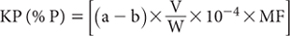

Method 7A2a for total Kjeldahl N uses a semi-micro Kjeldahl front-end, wherein the Kjeldahl digest described in Method 7A1 is diluted to a known volume prior to subsequent instrumental analysis. This related method is based on use of 50 mL digestion tubes heated on a drilled aluminium (Al) block on a hot-plate. The Kjeldahl digestion uses 18 M H2SO4 with sodium sulfate (Na2SO4) to raise the boiling point, and copper as a catalyst. All or almost all P in the sample is converted to orthophosphate.
Subsequently, orthophosphate in the digest is determined by a colorimetric method utilising flow injection analysis (FIA) or a continuous segmented flow alternative. The FIA technology is briefly described in Method 7A2b, while the colorimetric reaction involves use of ammonium molybdate and potassium antimony tartrate under acidic conditions. The molybdenum-blue complex, formed following reduction with ascorbic acid, absorbs at 882 nm. Soluble silicate can cause positive analytical interference, but a silicate concentration >100 mg/L would be needed to produce an error of 0.015 mg P/L. Kjeldahl N and K in soil can also be determined using this method; see Note 1.
While FIA is described, continuous segmented flow analysis is an appropriate alternative. Irrespective of the analytical technology, it is acknowledged that the analyst must be guided by the operational instructions and directions given by the manufacturer. This could require changes to the specified reagents and to the flow diagram provided for this method.
As for Method 7A2b.
Digest Acid
As for Method 7A1.
Catalyst Mixture
As for Method 7A1. Alternatively use Kjeldahl catalyst tablets (e.g. BDH Cat No. 33064) containing 1.0 g Na2SO4 and 0.1 g anhydrous CuSO4.
Stock Ammonium Molybdate Solution
Weigh 40.0 g ammonium molybdate tetrahydrate [(NH4)6Mo7O24.4H2O] into a 1.0 L flask and make to volume with distilled (preferred) or deionised water. Stir magnetically overnight to dissolve and filter if necessary. Store at around 4°C.
Stock Potassium Antimony Tartrate Solution
Weigh 2.9 g of anhydrous potassium antimony tartrate [K(SbO)C4H4O6] into a 1.0 L flask and make to volume with distilled or deionised water. Shake to dissolve and store at around 4°C.
To a 1.0 L dark borosilicate flask containing 340 mL distilled or deionised water, carefully and slowly add 18 mL of 18 M H2SO4. Swirl to mix and allow the now hot mixture to cool to around room temperature. Add 107 mL of Stock Ammonium Molybdate Solution and 36 mL of Stock Potassium Antimony Tartrate Solution. Shake to mix and prepare fresh monthly. There may be a water-quality problem if this mixed solution should become cloudy, in which case, use only distilled water or deionised water known to be free of organic impurities. Store the Molybdate Colour Reagent at ≈4°C but allow it to reach room temperature before use.
Ascorbic Acid Solution
Weigh 3.0 g l-ascorbic acid (C6H8O6) in distilled water and dissolve. Add 0.05 g of sodium dodecyl sulfate [CH3(CH2)11OSO3Na] and shake to dissolve, then make to 100 mL. Prepare freshly each day.
Kjeldahl Reagent Blank
Carefully add 60 mL 18 M H2SO4 to 750 mL of deionised water while stirring in a 1.0 L borosilicate conical flask. Add 20 g sodium sulfate (Na2SO4) and 2.0 g anhydrous copper sulfate (CuSO4) and stir until dissolved. Cool and make to volume (1.0 L) with water.
Kjeldahl N, P and K Primary Standard
1 mL contains 0.5, 0.1 and 0.5 mg of NH4-N, PO4-P, and K (as KCl), respectively.
Prepare as per Method 7A2b. (See Note 1)
Kjeldahl Combined N, P and K Working Standards (KCWS)
Prepare as per Method 7A2b. These KCWS contain 1.0, 2.0, 5.0, 10.0, and 20.0 mg PO4-P/L. For a 1:100 soil/Kjeldahl digest ratio, these equate to 100–2000 mg P/kg.
Figure 9.3. An automated FIA flow sheet for soil Kjeldahl P.
Weigh 0.50 g (0.1–0.2 g for peats or litters) of finely ground (<0.5 mm) air-dry (≈40°C) sample into clean, dry 50 mL calibrated test tubes, and note the actual sample weight. Include Reagent Blanks and Control Samples (known KP content) at a frequency of two of the former to one of the latter for each batch of around 40–50 digest tubes. Proceed as described in Method 7A2b.
Set up the FIA equipment as shown in the flow diagram (Figure 9.3), noting instrument selections and settings should be in accord with manufacturer’s instructions. For example, switch on the computer, load the software, load the sampler, inject/pump water through all reagent lines and check for leaks and smooth flow. Switch to reagents and allow the system to equilibrate for a few minutes. Run Working Standards and sample digest solutions as necessary. Degas reagents if necessary.

where:
a = P in air-dry sample digest, expressed as mg/L
b = P in digest blank (mg/L)
V = final volume of sample digest (mL, usually 50 mL)
W = sample weight (g)
10–4 = factor to convert mg/kg to g/100g (%)
MF = air-dry to oven-dry moisture factor
For a 0.5 g air-dry sample and 50 mL digest volume:
KP (%P; oven dry) = [(a – b) × 0.01 × MF]
Report KP (% P) on an oven-dry basis.
1. While K is included in both the Primary Standard and in Working Standards, this does not infer that the resultant estimate of Kjeldahl K is a good approximation of total soil K. Indeed, recoveries can be as low as 5–10% of the total.